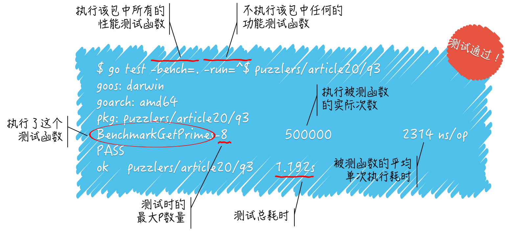

测试的基本规则和流程 2
怎样解释功能测试的结果
go test gocore/gotest
ok gocore/gotest 0.204s
第一行是输入的命令，表示对 gocore/gotest 代码包进行测试。下面一行是此次测试的简要结果，共有三块内容，首先是本次测试结果，ok 表示测试成功，也就是说没有发现不符合预期的情况。中间是被测试代码包的导入路径，最后展现的是本次测试所耗费的时间，不过当我们第二次运行这个命令时，输出的测试结果会有不同：
go test gocore/gotest
ok gocore/gotest (cached)
可以看到，结果最右边的不再是测试耗时，而是 (cached)。这表明，由于测试代码与被测试代码都没有任何改动，所以 go test 命令直接把之前换成测试成功的结果打印出来了。
go 命令通常会缓存程序构建的结果，以便在将来的构建中重用。我们可以通过运行 go env GOCACHE 命令来查看缓存目录的路径。缓存的数据总是能够正确的反应出当时的各种源码文件、构建环境、编译器选项等真实情况。
一旦有任何改动，缓存数据就会失效，go 命令就会再次真正的执行操作。所以我们不用担心打印出的缓存数据不是实时的结果。go 命令会定期的删除最近未使用的缓存数据，但是，如果你想手动删除所有的缓存数据，运行一下 go clean --cache 命令就好了。
对于测试成功的结果，go 命令也是会缓存的。运行 go clean --testcache 命令将会删除所有的测试结果缓存。而这样并不会删除任何构建结果。
设置环境变量
GODEBUG的值可以稍稍的改变go命令的缓存行为。比如，设置值为gocacheverify=1将会导致go命令绕过任何的缓存数据，而真正的执行操作并重新生成所有的结果，然后再去检查新的结果与现有的缓存数据是否一致。
我们并不需要在意缓存数据的存在，它们并不会妨碍 go test 命令打印正确的测试结果。
当我们在功能测试函数中调用 t.Fail 方法时，虽然当前的测试函数会继续执行下去，但是结果会显示测试失败：
go test gocore/gotest
--- FAIL: TestFail (0.00s)
main_test.go:37: Failed.
FAIL
FAIL gocore/gotest 0.201s
对于失败测试的结果，go test 命令并不会进行缓存，这种情况下每次测试都会产生新的结果。另外，go test 会把失败的测试函数中的常规测试日志一并打印出来。想在测试成功时查看的话需要执行 go test -v 命令。
如果想让某个测试函数在执行过程中立即失败，则可以在函数中使用
t.FailNow方法。该方法执行后函数会立即终止运行，之后的代码都失去执行机会。
如果需要在测试失败的同时打印失败测试日志，可以直接调用 t.Error 或者 t.Errorf。前者相当于 t.Log 和 t.Fail 连续调用，后者也类似。
还有 t.Fatal 和 t.Fatalf，它们的作用是在打印失败错误日志之后即终止当前测试函数的执行并宣告测试失败。具体的说，相当于它们最后调用了 t.FailNow。
怎样解释性能测试的结果
go test -bench=. -run=^$ gocore/gotest/xingneng
goos: windows
goarch: amd64
pkg: gocore/gotest/xingneng
BenchmarkGetPrimes-4 444450 2390 ns/op
PASS
ok gocore/gotest/xingneng 1.301s
我们运行 go test 命令时加了两个标记。第一个标记及其值是 -bench=.，只有有了这个标记，命令才会进行性能测试。该标记的值 . 表明需要执行任意名称的性能测试函数，当然了，函数名称还是要符合 Go 程序测试的基本规则的。
第二个标记及其值 -run=^$ 表明需要执行哪些功能测试函数，同样以函数名称为依据的。该标记的值 ^$ 表明只执行名称为空的功能测试函数，也就是说不执行任何功能测试函数。
这两个标记的值都是正则表达式，如果运行 go test 命令的时候不加 -run 标记，那么会使它执行被测试代码包中所有的功能测试函数。
在看测试结果，重点看倒数第三行。BenchmarkGetPrimes-4 被称为单个性能测试的名称，它表示命令执行了性能测试函数 BenchmarkGetPrimes，并且当时所用的最大 P 数量是 4。
最大 P 数量相当于可以同时运行 goroutine 的逻辑 CPU 的最大个数。这里的逻辑 CPU，也可以被称为 CPU 核心，但它并不等同于计算机中真正的 CPU 核心，只是 Go 语言运行时系统内部的一个概念，代表着它同时运行 goroutine 的能力。
我们可以通过调用 runtime.GOMAXPROCS 函数改变最大 P 数量，也可以在运行 go test 命令时，加入标记 -cpu 来设置一个最大 P 数量的列表，以供命令在多次测试时使用。
在性能测试函数名称右边的是，go test 命令最后一次执行性能测试函数的时候被测函数被执行的时间次数。
go test 命令在执行性能测试函数的时候会给它一个正整数，若该测试函数的唯一参数的名称为 b，则该正整数就由 b.N 代表。我们应该在测试函数中配合着编码，如：
for i := 0; i < b.N; i++ {
GetPrimes(1000)
}
我们在一个会迭代 b.N 次的循环中调用了 GetPrimes 函数，并给予它参数值 1000。go test 命令会先尝试把 b.N 设置为 1，然后执行测试函数。
如果测试函数的执行时间没有超过上限，此上限默认为 1 秒，那么命令就会改大 b.N 的值，然后再次执行测试函数，如此往复，直到这个时间大于或等于上限为止。
当某次执行的时间大于或等于上限时，我们就说这是命令此次对该测试函数的最后一次执行。这时的 b.N 的值就会被包含在测试结果中，也就是上述测试结果中的 444450。
我们可以简称该值为执行次数，但要注意，它指的是被测函数的执行次数，而不是性能测试函数的执行次数。
最后再看这个执行次数的右边，2390 ns/op 表明单次执行 GetPrimes 函数的平均耗时为 2390 纳秒。这其实就是通过将最后一次执行测试函数时的执行时间，除以（被测函数的）执行次数而得出的。
